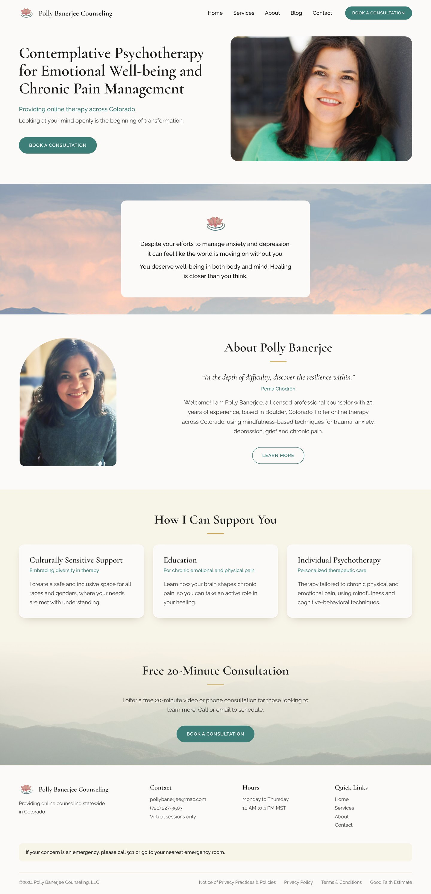
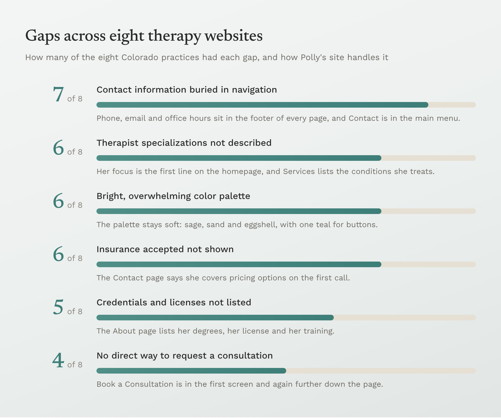
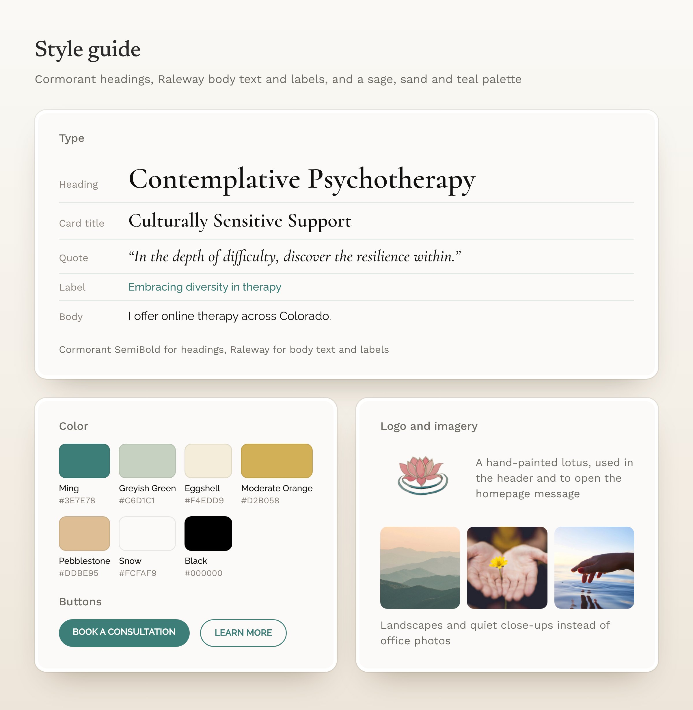
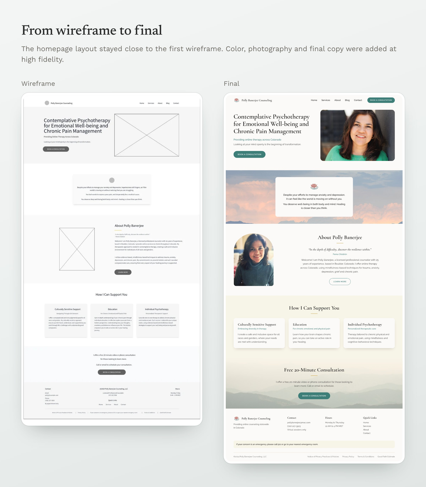
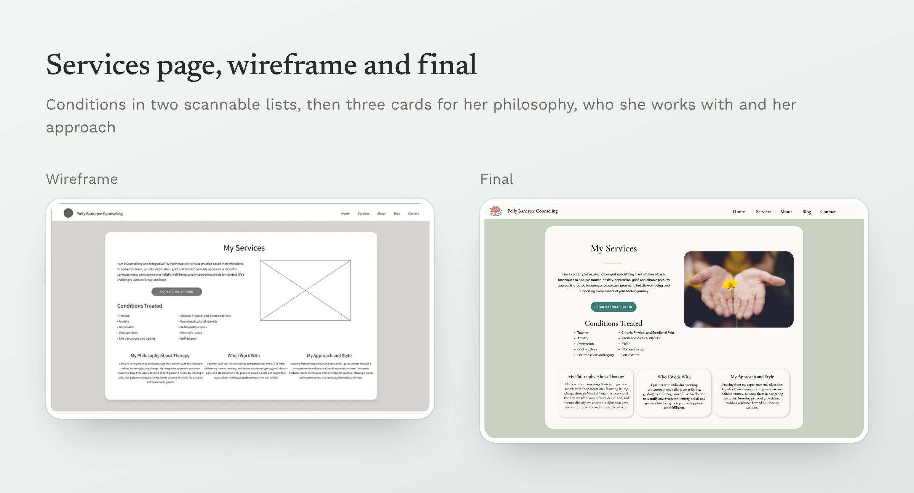
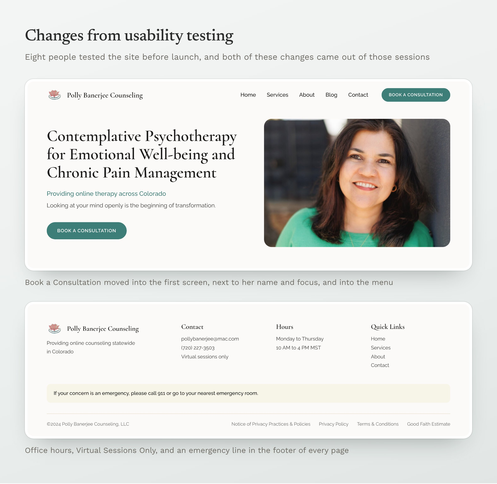
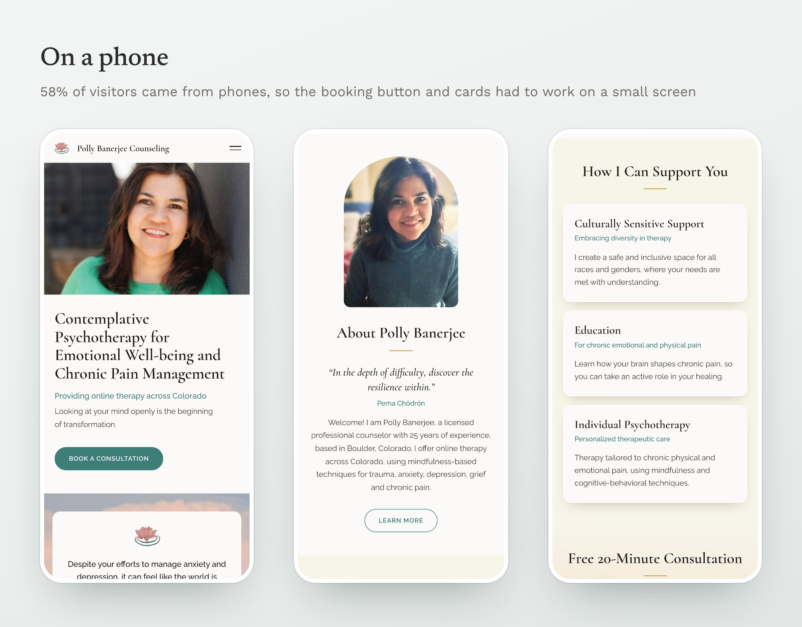

Fig 02. The homepage before and after the redesign
Full site redesign
Polly Banerjee is a licensed counselor in Boulder with 25 years of experience. Visitors to her old website couldn't tell what she specialized in, and there wasn't an obvious way to book a first appointment.
I reviewed eight counseling websites in Colorado and interviewed Polly about how she talks about her work. I redesigned the site over two weeks, then tested it with eight people and moved the booking button into the first screen.
Consultation bookings went up 55% in the six months after launch. Sessions also got longer and the bounce rate dropped 30%, which suggests people were finding what they came for.

Fig 01. The redesigned homepage. Scroll to see the full page.
Polly specializes in contemplative psychotherapy and chronic pain. Her original site opened on a landscape photo and a long welcome message, and it didn't say much about either focus.
The only button on the homepage was Contact Me, about halfway down. Her specializations and office hours were hard to find, which is a lot to ask of someone who's already nervous about starting therapy.
Polly asked for a full redesign. She wanted new visitors to understand how she works and feel comfortable reaching out, and she wanted the booking button to be easy to find.
Fig 02. The homepage before and after the redesign
I used Claude to help run a competitive review of eight counseling practice websites in Colorado, looking at visual design, navigation, and how each one handled booking. Most of them had the same problems, and so did Polly's old site.
Finding 1
Most of the sites felt impersonal. Palettes were either cold or busy, and few used photos of the therapist or anything about her story.
Finding 2
Specializations were hard to find, and insurance details were often missing. People who were already anxious ended up digging through menus.
Finding 3
Several sites had multi-step booking flows or consultation buttons that were easy to miss, right at the point when someone was deciding whether to reach out.

Fig 03. What turned up across the eight sites
Polly's work is contemplative, and I wanted the site to feel calm and warm. I chose a soft sage and sand palette with Cormorant headings, and used landscape photos instead of stock office photos. Her hand-painted lotus became the logo.
Structure
The site has Home, Services, About, Blog and Contact. Services covers what she treats and how she works, About has her story and training, and Contact is where people book.

Fig 04. The visual system: type, color, buttons, logo and imagery
I interviewed Polly about how she talks about her work and what her clients respond to, then drafted the service descriptions from those conversations. I used Claude to tighten the tone and to check that the terms she uses, like contemplative psychotherapy and chronic pain counseling, match what people in Colorado search for.
Someone landing on the homepage for the first time should be able to see who Polly is and what she helps with, and find a way to contact her without much scrolling.
Homepage
Her photo, her specialties and a Book a Consultation button are all above the fold. The same button is in the menu and again near the bottom of the page, next to the offer of a free 20-minute consultation.
Services
The conditions she treats are in two short lists, so people can check quickly whether she works with what they're dealing with. Below those, three cards cover her philosophy, who she works with and her approach.
About
People choosing a therapist usually want to know a bit about who she is and how she was trained, so I put the two side by side.

Fig 05. Homepage wireframe and final design

Fig 06. Services page wireframe and final design
Before launch, I ran informal usability tests with eight people who hadn't seen the site. I asked each of them to look up a specific kind of therapy, tell me what Polly offers, and book a consultation.
Several people scrolled right past the booking button, so I moved it up into the first screen, next to her name. I also added office hours to the footer, a Virtual Sessions Only note, and a line telling visitors to call 911 in an emergency. A few participants pointed out that the emergency line was missing, and most mental health sites include one.

Fig 07. Two changes that came from testing

Fig 08. The About and Contact pages

Fig 09. The homepage, About section, and services cards on a phone
I tracked results through Google Analytics and Polly's own client reporting at six months. The main goal was more consultation bookings. Sessions also got longer and the bounce rate dropped, which suggests people were finding what they came for.
New Client
Feeling welcoming was at the top of Polly's list for the redesign.
Site Visitor
Her approach is now the headline on the homepage.
New Client
The booking button is in the first screen, and the Contact page offers a phone call as well as a short form.
Moving the booking button wasn't in the original brief. It came out of watching eight people use the site, and I wouldn't have caught it on my own.
Working with an audience that's already nervous about reaching out made me pay closer attention to small things, like an extra click before booking or a label that isn't clear. I look for those on every project now.
Next time I'd test earlier, at the wireframe stage. Catching the button problem before high fidelity would have saved a round of design changes and left more time to try other layouts.